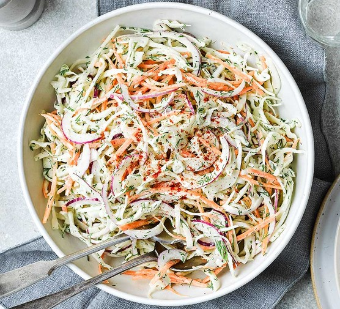

Coleslaw

A creamy coleslaw dressing that can be made with ingredients you already have!
You can pour it immediately over a 14-ounce package of coleslaw mix or refrigerate until needed.
Ingredients:
- 1/2 cup mayonnaise
- 2 tablespoons white sugar
- 1 and a half tablespoons lemon juice
- 1 tablespoon vinegar
- 1/2 teaspoon ground black pepper
- 1/2 teaspoon salt
Steps:
- Gather all of the ingredients.
- Whisk mayonnaise, sugar, lemon juice, vinegar, pepper, and salt together in a bowl until smooth and creamy.
- Store in an airtight container.